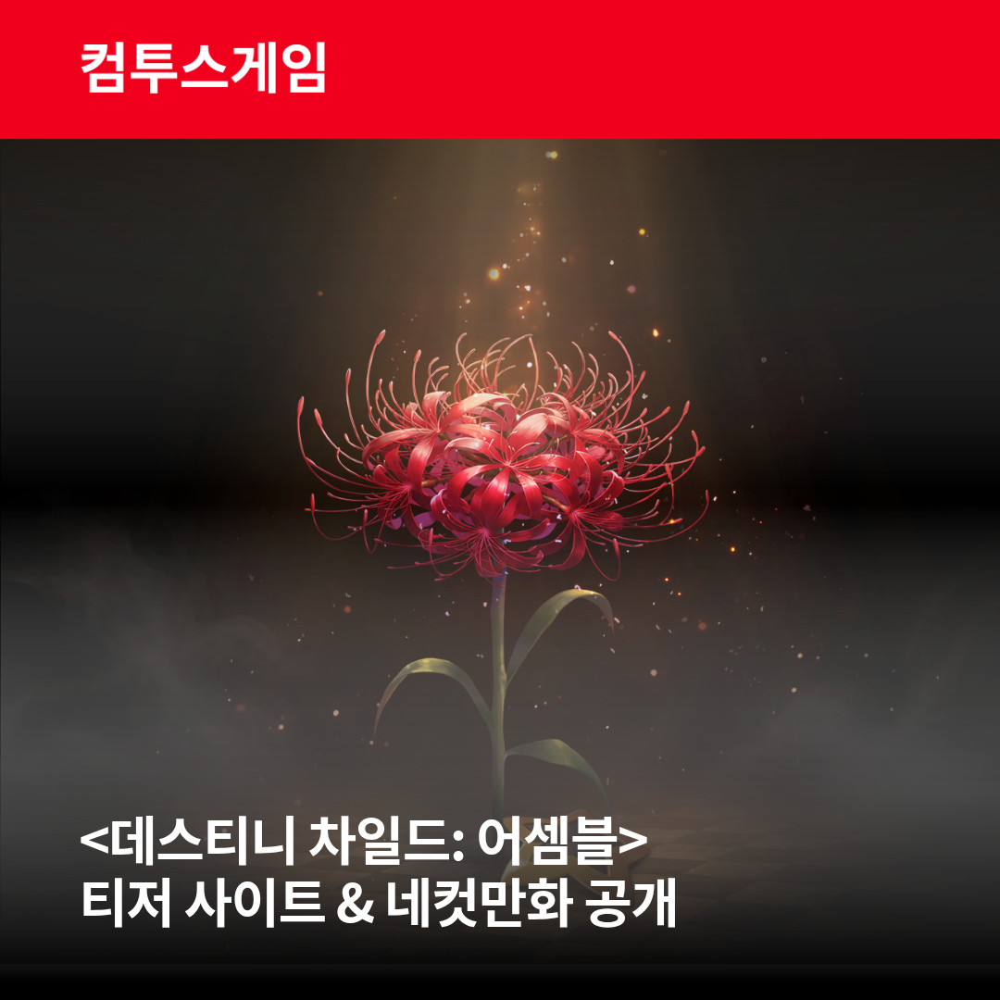
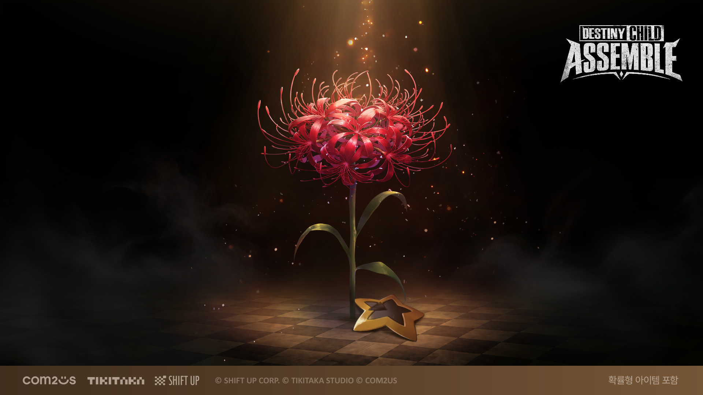

데스티니 차일드 어셈블 티저 사이트·영상 공개, 2027 상반기 출시
컴투스가 데스티니 차일드: 어셈블 티저 사이트를 열었어요. 이름만 들어도 반가운 분들 계실 텐데요, 2026년 10월 27일에 티저 사이트와 첫 티저 영상이 한꺼번에 공개됐거든요. 결론부터 말씀드리면 2027년 상반기 출시를 목표로 하는 방치형 RPG이고, 이번 보도자료와 티저 사이트에는 사전예약이나 정확한 출시일 언급이 없어요.

티저 사이트와 네컷만화 공개 소식 이미지예요.
이미지 출처: 컴투스 보도자료 · © SHIFT UP·TIKITAKA STUDIO·COM2US
이번에 공개된 건 티저 사이트와 첫 영상이에요
사이트에는 성물 '소생화'를 앞세운 티저가 올라왔고, 공식 X 채널에서는 개발 비하인드를 담은 네컷만화가 순차적으로 공개된다고 해요. 컴투스와 시프트업, 티키타카스튜디오 세 회사가 함께 나선 공개라는 점도 눈에 띄는데요, 게임의 기본 정보는 아래 표로 묶어 봤어요.
| 항목 | 내용 |
|---|---|
| 장르 | 방치형 RPG |
| 플랫폼 | iOS·AOS |
| 출시 시기 | 2027년 상반기 |
| 과금 표기 | 확률형 아이템 포함 |

공개된 키비주얼이에요. 붉은 꽃이 화면 한가운데 놓여 있고, 맨 아래 띠에는 세 회사 로고와 함께 '확률형 아이템 포함' 표기가 들어가 있어요.
이미지 출처: 컴투스 보도자료 · © SHIFT UP·TIKITAKA STUDIO·COM2US
티저 영상에는 무엇이 담겼을까요
첫 티저 영상의 핵심 장면은 성물 '소생화'가 피어나는 순간과 재회를 예고하는 대사 한 줄이에요. 대사가 다시 만남을 떠올리게 하는 내용이라, 보는 쪽에서는 오랜만에 돌아왔다는 인상을 받게 되죠.
티저 사이트의 소개 문구에도 같은 결의 한 줄이 있는데요, 바로 '우리의 계약, 기억하고 있어?'예요. 영상의 재회 분위기와 이 문구가 같은 곳을 가리키고 있어서, 이번 티저의 중심 메시지는 다시 만난다로 읽혀요. 소식 이미지와 키비주얼도 꽃 한 송이를 한가운데 두고 있어서, 이번 티저의 얼굴은 소생화 하나로 통일된 느낌이에요.
티저 사이트 첫 화면 캡처 자리예요.
어셈블은 원작과 어떻게 이어질까요
어셈블은 원작의 이야기를 담으면서 새 이야기도 선보이는 방향인데요, 원작을 아는 분과 처음 접하는 분의 진입 지점이 갈리는 대목이에요. 보도자료가 밝힌 구성은 아래 세 갈래예요.
- 원작 시나리오: 원작 설정을 아는 분이 낯설지 않게 들어갈 수 있는 출발점
- 원작 사이드 스토리: 원작의 곁가지 이야기까지 담는 부분
- 새로운 이야기: 어셈블에서 처음 펼쳐지는 전개
'어셈블'이라는 이름도 눈여겨볼 만한데요, 원작 속 플레이어의 호칭이던 '마왕후보생'들이 다시 모인다는 뜻을 담았다고 해요. 제목 자체가 원작 유저에게 건네는 인사 같아요. 만드는 쪽 구성은 이렇게 나뉘어요.
- 시프트업: 원작 IP를 가진 쪽
- 티키타카스튜디오: 어셈블 개발
- 컴투스: 글로벌 서비스
시간 순서로 놓고 보면 이번 티저가 어디쯤인지 감이 와요.
| 시점 | 일어난 일 |
|---|---|
| 2016년 10월 | 원작 데스티니 차일드 시작 |
| 2024년 11월 | 컴투스와 시프트업의 개발 및 글로벌 서비스 계약, IP 기반 방치형 RPG 개발 발표 |
| 2026년 10월 27일 | 어셈블 티저 사이트·첫 티저 영상 공개 |
| 2027년 상반기 | 출시 목표 |
표의 2024년 11월 항목은 인벤 보도, 2016년 10월은 이번 보도자료가 말한 'IP 출시 10주년'을 기준으로 적었어요. 계약 발표 뒤 첫 모습이 나오기까지 대략 2년이 걸린 셈이라, 원작을 오래 기다린 분들께는 '다시 모인다'는 이름이 꽤 직접적으로 닿을 만해요. 원작을 하셨던 분은 이야기가 이어진다는 점이, 이번에 처음 접하는 분은 새 이야기가 더해진다는 점이 진입 포인트예요. 어느 쪽이든 지금은 세계관을 먼저 맛보는 단계예요.
이번 발표에서 아직 안 나온 정보는 뭘까요
이번 보도자료와 티저 사이트에는 사전예약 일정, 정확한 출시일, 등장 캐릭터에 대한 언급이 없어요.
확인 위치: 티저 사이트와 공식 X 계정 · 새 공개가 나오면 아래에 채워주세요.
| 항목 | 값(공개 후 입력) |
|---|---|
| 사전예약 | — |
| 정확한 출시일 | — |
| 캐릭터 | — |
지금 단계의 티저는 게임의 방향을 보여 주는 첫걸음에 가까워요. 지금 알려진 일정은 2027년 상반기라는 목표 시기뿐이고, 보도자료도 공식 X와 티저 사이트에서 정보를 계속 공개하겠다고 밝혔으니 새 공개를 기다리는 쪽이 현실적이에요.
자주 묻는 질문
Q. 원작 데스티니 차일드는 지금도 할 수 있나요?
원작은 2023년 9월에 서비스를 종료했어요(엠티엔 보도 기준). 그래서 어셈블은 원작을 다시 켜는 게임이 아니라, 시나리오와 세계관을 이어받은 새 게임으로 보시면 돼요.
Q. 출시 시기가 예전 자료보다 늦어진 건가요?
컴투스 2025년 3분기 실적발표 자료의 신작 라인업 표에는 이 IP 기반 키우기 RPG가 2026년으로 적혀 있었어요. 이번 발표 기준으로는 2027년 상반기가 가장 최신 일정이에요.
다음 공개를 기다리며
이번 티저에서 손에 잡히는 건 소생화와 재회라는 두 키워드, 그리고 2027년 상반기라는 목표 시기예요. 양으로 보면 소식이 많지는 않지만, 사이트 문구 한 줄이 원작을 기억하는 분들 마음을 건드릴 만해요. 저도 다음 공개가 기다려지네요. 새 소식은 공식 X와 티저 사이트에서 이어진다고 하니 한 번씩 들러 보시는 걸 추천드려요.
✔ 데스티니 차일드 같이 보기 좋은 내용
· 버섯커 키우기 데스티니 차일드 콜라보로 모바일RPG게임순위 상승!
참고한 곳
· 컴투스 보도자료 — 데스티니 차일드: 어셈블 티저 사이트 오픈
· 데스티니 차일드: 어셈블 공식 티저 사이트
· 인벤 — 컴투스·시프트업 글로벌 퍼블리싱 계약 보도 (2024.11)
· 엠티엔 — 데스티니 차일드 서비스 종료 보도 (2023.07)
· 컴투스 2025년 3분기 실적발표 자료 (2025.11)